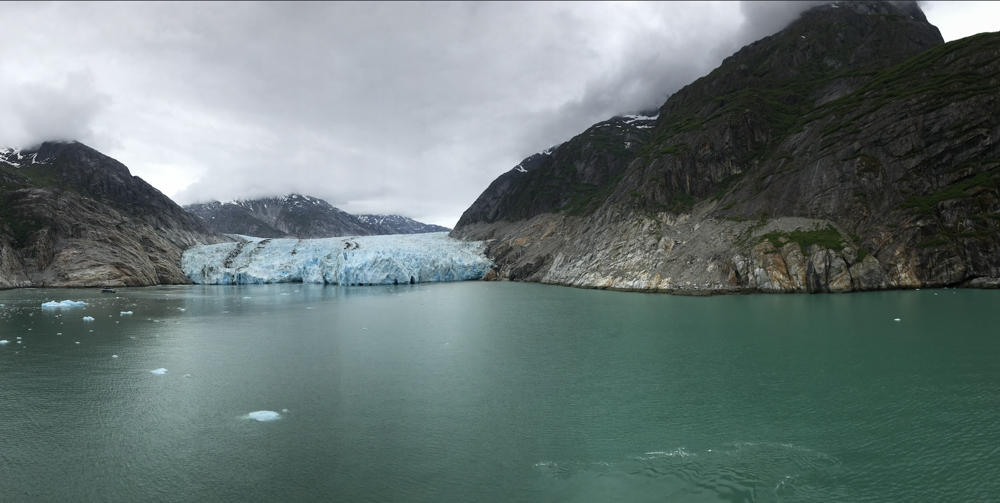

February 3, 2023
One of my favorite trips was my honeymoon. We took a Disney Cruise out of Vancouver, British Columbia, Canada. The ship took us north along the Alaskan coastline. While on the cruise, we made stops in Juneau, Skagway, and Ketchikan. We were also able to see the most amazing views along the Tracy Arm Fjord. Within the fjord, we were able to see Sawyer Glacier shown in the photo I snapped above. What the photo doesn't capture are the echos of cracking ice and chunks plummeting into the water. On the left, within the photo, there is a boat of tourists. This is a great representation of how large the glacier is. The awe inspring scene is definitely stuffed into my core memories. We have plans to redo this trip with my partner's family in the future.
My name is Steph Simmons. I am a MIS major at the University of Nebraska Omaha. I also work as a technical lead and scrum master. I have been married to my partner for 6 years. In our free time, we love to travel. We have one fur baby, Heidi, a mini dachshund. We adopted her at the ripe age of 12 and she is now 16. When we travel, Heidi stays with her grandparents.